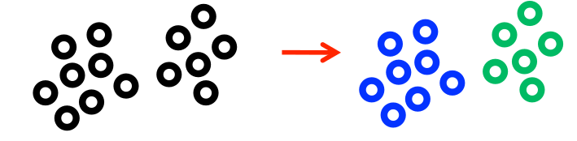

Segmentation¶
Introduction¶
La segmentation consiste à partitionner une image \(f\) selon un critère d’homogénéité. « Partitionner » signifie que l’image est divisée en plusieurs régions \(R_i\) qui sont à la fois disjointes et telles que l’ensemble de ces régions recouvrent l’intégralité de l’image. Les pixels d’une région vérifient le critère d’homogénéité, mais les pixels de deux régions adjacentes ne le vérifient pas.
Les figures ci-après présentent plusieurs exemples de segmentation.
{kind=link}
Ce chapitre présente plusieurs méthodes de segmentation, et termine sur la façon de mesurer la qualité de la segmentation. Mais avant tout, il est utile de définir quelques termes liés à la relation qui peut exister entre les pixels.
Connexité
La connexité est la façon dont sont définis les voisins d’un pixel. En général, on n’utilise que l’une des deux connexités suivantes :
la 4-connexité : un pixel possède quatre voisins (en haut, en bas, à gauche, à droite),
la 8-connexité : un pixel possède huit voisins (les quatre précédents et ceux sur les diagonales).
{kind=link}
Fig. 49 4-connexité (à gauche) et 8-connexité (à droite). Les pixels en gris sont les voisins du pixel \((m,n)\).¶
Composante connexe
Une composante connexe (connected component) est un groupe de pixels tel qu’on puisse aller d’un pixel de ce groupe à un autre pixel de ce groupe en passant par des pixels du même groupe voisins entre eux.
Ainsi, dans la Fig. 50, le nombre de composantes connexes est égal à 5 si on considère un voisinage en 4-connexité, ou à 4 si on considère un voisinage en 8-connexité.
{kind=link}
Fig. 50 Le nombre de composantes connexes (entourées d’un trait de couleur) dépend de la connexité considérée.¶
Remarques
Chaque région \(R_i\) de la segmentation est une composante connexe.
Le résultat de la segmentation n’est pas unique : il dépend du critère d’homogénéité choisi, de la méthode de segmentation utilisée, de l’initialisation, etc.
Une segmentation peut s’interpréter comme un graphe, dans lequel les nœuds correspondent aux régions \(R_i\) et les liens représentent l’adjacence entre régions voisines.
{kind=link}
Histogram thresholding¶
Binarisation¶
Une méthode très simple de segmentation consiste à associer à chaque pixel de l’image \(f\) une valeur binaire qui dépend de l’intensité des pixels et d’un seuil \(T\) :
Cette méthode, appelée « binarisation », effectue une segmentation en deux classes à partir de l’intensité des pixels d’une image à niveau de gris (cf. Fig. 52).
{kind=link}
Le résultat de la segmentation dépend de \(T\), comme on le voit Fig. 53.
{kind=link}
L’histogramme s’avère être un outil intéressant pour le choix du seuil. Dans l’exemple illustré Fig. 54, le choix du seuil est facile à partir de l’histogramme : il suffit de choisir \(T\) entre les deux modes de ce dernier.
{kind=link}
Mais dans d’autres cas, le choix du seuil est moins évident, comme c’est le cas Fig. 55 (il faut alors choisir un seuil comme dans la Fig. 56).
{kind=link}
{kind=link}
Fig. 56 Segmentation binaire avec un seuil choisi par rapport à l’histogramme.¶
Méthode de Otsu¶
La méthode de Otsu (1979) permet de déterminer le seuil \(T\) qui minimise la « variance intra-classe » \(\sigma_w^2(T)\). Cette variance intra-classe est la moyenne pondérée des variances \(\sigma_1\) et \(\sigma_2\) de chaque classe (les classes étant les parties de l’histogramme délimitées par \(T\), comme illustré Fig. 57):
{kind=link}
En considérant que les intensités \(i\) sont à valeurs dans \(\{0,...,L-1\}\) et que \(h\) est l’histogramme de l’image, on a formellement :
Pour la classe 1 :
Proportion : \(\displaystyle q_1(T) = \frac{1}{MN} \sum_{i = 0}^{T} h(i)\)
Moyenne : \(\displaystyle m_1(T) = \frac{1}{MN}\frac{1}{q_1(T)} \sum_{i = 0}^{T} i h(i)\)
Variance : \(\displaystyle \sigma^2_1(T) = \frac{1}{MN}\frac{1}{q_1(T)} \sum_{i = 0}^{T}(i\!-\!m_1(T))^2 h(i)\)
Pour la classe 2 :
Proportion : \(\displaystyle q_2(T) = \frac{1}{MN}\sum_{i = T+1}^{L-1} h(i)\)
Moyenne : \(\displaystyle m_2(T) = \frac{1}{MN}\frac{1}{q_2(T)} \sum_{i = T+1}^{L-1} i g(i)\)
Variance : \(\displaystyle \sigma^2_2(T) = \frac{1}{MN}\frac{1}{q_2(T)} \sum_{i = T+1}^{L-1}(i\!-\!m_2(T))^2 h(i)\)
L’algorithme est simple : il suffit de calculer la variance intra-classe \(\sigma_w^2(T)\) pour tous les seuils \(T = \{0,...,L-1\}\), et de retenir finalement le seuil \(T\) qui minimise \(\sigma_w^2(T)\).
Par ailleurs, remarquez que la variance \(\sigma^2\) des intensités de l’image s’écrit :
où \(\sigma_{1,2}^2\) est la « variance inter-classe » (variance pondérée des moyennes de chaque classe). Ainsi, minimiser la variance intra-classe \(\sigma_w^2\) est équivalent à maximiser la variance inter classe \(\sigma_{1,2}^2\) (puisque \(\sigma^2\) reste constant). Cela signifie que construire deux groupes de pixels qui se ressemblent revient à construire deux groupes de pixels très dissemblables.
Seuillage multiple¶
Lorsque plusieurs modes sont visibles sur l’histogramme, il est possible d’utiliser plusieurs seuils pour aboutir à plusieurs classes :
{kind=link}
En particulier, la méthode de Otsu peut être étendue à plusieurs seuils, mais la complexité calculatoire augmente grandement avec le nombre de classes !
Classification¶
Le seuillage s’applique sur une image monochrome, pour laquelle il est facile de définir un seuil à partir des modes de l’histogramme. Mais pour segmenter une image multibande (par exemple une image couleur), il n’est pas possible de s’appuyer sur l’histogramme de l’image car il est possède maintenant plusieurs dimensions. Un pixel d’une image à \(B\) bandes est ainsi représenté par un vecteur à valeurs dans \(\mathbb{R}^B\).

Fig. 59 Représentation dans \(\mathbb{R}^B\) d’un pixel d’une image.¶
Le principe des méthodes de classification (ou plus exactement de coalescence, en anglais : clustering) est de regrouper les pixels en groupes homogènes.
Algorithme des k-moyennes¶
L’algorithme des k-moyennes (k-means) (Steinhaus 1957, MacQueen 1967) est une méthode itérative qui affecte chaque point de l’espace \(\mathbb{R}^B\) (chaque pixel, donc) à un groupe particulier (clusters). Le nombre \(K\) de groupes est choisi par l’utilisateur.
L’algorithme est le suivant :
Initialisation aléatoire de \(K\) centroïdes
Répéter tant que les centroïdes varient :
Pour chaque point :
Calcul des distances du point à tous les centroïdes
Affectation du point au groupe le plus proche
Calcul du centroïde de chacun des groupes
La Fig. 60 illustre cet algorithme, dans le cas simple d’une image à deux bandes (espace à deux dimensions) à segmenter en \(K=2\) classes (deux couleurs, ici rouge et vert).

Fig. 60 Illustration de l’algorithme des k-moyennes.¶
La Fig. 61 donne le résultat de l’algorithme des k-means sur une image.

Fig. 61 Exemple d’application de l’algorithme des k-means sur l’image de gauche (au centre : \(K=2\) classes, à droite : \(K=4\) classes).¶
Les avantages de l’algorithme des k-means sont :
méthode simple
implémentation facile
méthode généralement rapide
classes de variance conditionnelle minimale
fonctionne correctement lorsque les clusters sont sphériques

{kind=link}
Les inconvénients de l’algorithme des k-means sont :
{kind=link}
{kind=link}
Region-based methods¶
La limite fondamentale des méthodes précédentes est de ne pas prendre en compte l’information de voisinage : seule l’information de distribution des intensités est utilisée.
À l’inverse, les méthodes basées région sont capables d’agréger des pixels spatialement proches et ayant des intensités similaires. Nous allons voir deux méthodes basées régions :
la croissance de région
la méthode de décomposition/fusion
Croissance de région¶
Le principe de la croissance de région (region growing) est, à partir d’un pixel initial (appelé « germe »), d’étendre la région en y ajoutant les pixels du voisinage qui satisfont le critère d’homogénéité, comme l’illustre la Fig. 62.
{kind=link}
Le choix du germe peut se faire manuellement ou automatiquement (par exemple en choisissant au hasard un pixel en dehors des zones de fort contraste).
Le critère de similarité est le suivant : si un pixel \(f(m,n)\) et une région \(R\) sont suffisamment similaires, alors ils sont fusionnés ; sinon une nouvelle région est créée. On peut utiliser par exemple le critère
Ainsi, si le paramètre \(T\) est élevé, il sera facile d’agréger des nouveaux pixels à la région. Au contraire, si \(T\) faible alors il sera plus difficile d’agréger des nouveaux pixels à la région.
La croissance de région ne fournit pas directement une partition de l’image, mais permet de segmenter une ou plusieurs structures d’intérêt via la sélection de germes adaptés. Pour segmenter une image en \(K\) classes, il faudra donc \(K\) germes.
Décomposition/fusion¶
La méthode de décomposition/fusion (split and merge) fonctionne en deux étapes :
d’abord, l’image est décomposée successivement en régions si elles ne satisfont pas le critère d’homogénéité. Cela permet d’aboutir à une première partition de l’image ;
ensuite, les régions obtenues sont fusionnées si elles sont adjacentes et qu’elles vérifient le critère d’homogénéité.
Décomposition
La décomposition est une procédure itérative. Au départ, il n’y a qu’une seule région qui correspond à l’image toute entière. À chaque itération, les régions qui ne vérifient pas le critère d’homogénéité sont divisées en quatre nouvelles régions de taille identique. La procédure s’arrête lorsque les régions sont toutes homogènes ; au pire, les régions les plus petites sont ainsi des pixels uniques.
On peut utiliser une représentation en quad-arbre (quad-tree) de cette décomposition : c’est une arborescence dont chaque nœud représente une région et possède quatre fils, la racine représente l’image entière.
{kind=link}
Finalement, la méthode de décomposition par quad-arbre fait apparaître des régions carrées sur l’image segmentée. Le problème majeur de cette décomposition provient de la rigidité des divisions réalisées sur l’image, mais au moins cela fournit une partition initiale de l’image.
Fusion
La partition de l’image obtenue avec la la représentation en quad-arbre peut être vue comme un graphe d’adjacence (RAG : region adjacency graph). C’est une nouvelle représentation, sous forme de graphe, dont :
les nœuds correspondent à une région de l’image,
les arêtes relient les nœuds correspondants à deux régions adjacentes (ayant une frontière commune). La Fig. 64 donne un exemple de tel graphe.
{kind=link}
Donc, à partir de ce graphe d’adjacence, les nœuds \(R_1\) et \(R_2\) voisins et dont le critère de similarité sur \(R_1 \cup R_2\) est respecté sont fusionnés (cf. Fig. 65).
{kind=link}
Watershed¶
La ligne de partage des eaux (watershed) considère l’image comme un carte topographique où :
les régions de la segmentation sont les vallées
les frontières entre régions sont les crêtes
Ainsi la Fig. 66 montre, pour une image de la Lune, ce que devrait être la carte topographique correspondante. Cette carte est en fait la vue 3D de la norme du gradient de l’image.
{kind=link}
Fig. 66 Une image et son gradient (vu comme une image et comme un signal 3D, faisant apparaître le relief).¶
Le principe de la ligne de partage des eaux est donc :
de construire la carte d’élévation,
de remplir progressivement d’eau chaque bassin versant : l’eau apparaît tout en bas du relief,
de faire monter le niveau de l’eau,
lorsque deux bassins se rejoignent, la ligne de partage des eaux est marquée comme frontière.
La Fig. 67 schématise cet algorithme sur une coupe de l’image.
{kind=link}
Une des limites de cette méthode apparaît lorsqu’il y a beaucoup de minima locaux dans le gradient. Dit autrement, il y a trop de bassins versants très petits, qui sont alors autant de régions dans la segmentation. Pour limiter ce nombre, on peut :
lisser (avec un filtre passe-bas) le gradient avant d’appliquer l’algorithme,
choisir manuellement les bassins versants d’intérêt avec des marqueurs,
ou fusionner les minima locaux.
How to evaluate the segmentation?¶
Ce chapitre a présenté les principales méthodes de segmentation, mais il en existe beaucoup d’autres ! Il n’existe pas une méthode de segmentation meilleure que tous les autres, dans tous les cas : le résultat dépend entre autre de l’image elle-même. Par conséquent, il est intéressant d’évaluer, pour le type d’image que l’on traite, la qualité de la segmentation. Pour cela, on peut utiliser différents critères, définis ci-après. En plus de l’image à segmenter, on a également besoin du résultat attendu, qu’on appelle « vérité terrain » (ground truth).
Imaginons, dans le cas d’une segmentation binaire, que la vérité terrain et la segmentation obtenue sont les images de la Fig. 68. Chaque image possède donc deux zones : l’objet segmenté (représenté en blanc) et le fond (en noir). Alors, on peut définir quatre types de zones (cf. Fig. 69) :
les vrais positifs (VP) représentent les pixels considérés comme étant dans l’objet et étant réellement dans l’objet,
à l’inverse, les vrais négatifs (VN) sont les pixels hors de l’objet à la fois dans la segmentation et la vérité terrain,
les faux positif (FP) sont les pixels considérés par la segmentation dans l’objet, mais qui en vrai n’en font pas partie,
enfin, les faux négatif (FN) sont les pixels de l’objet que la segmentation a classé en dehors.

Fig. 68 Vérité terrain \(f^*\) (à gauche) et segmentation obtenue \(f\) (à droite).¶

Fig. 69 Définition des vrais positifs (VP), faux positifs (FP), vrais négatifs (VN) et faux négatifs (FN).¶
À partir de ces quatre quantités, on peut utiliser l’un ou l’autre des critères suivants :
la sensibilité :
\[ \frac{\text{VP}}{\text{VP}+\text{FN}}, \]la spécificité :
\[ \frac{\text{VN}}{\text{VN}+\text{FP}}, \]le coefficient de Dice :
\[ \frac{2\,\text{VP}}{2\,\text{VP}+\text{FP}+\text{FN}} = \frac{2\,|f\, \cap f\,^*|}{|f\,| + |f\,^*|}, \]le coefficient de Jaccard :
\[ \frac{\text{VP}}{\text{VP}+\text{FP}+\text{FN}} = \frac{|f\, \cap f\,^*|}{|f\, \cup f\,^*|}. \]
Conclusion¶
En conclusion, nous avons vu que la segmentation consiste à diviser l’image en plusieurs régions homogènes. L’homogénéité d’une région est basée sur la couleur, la texture, les contours… Les méthodes de segmentation sont très diverses, et nous n’en avons vu que quelques unes. Parmi les autres méthodes existantes, citons les contours actifs (snakes), les ensembles de niveaux (level sets), les modèles markoviens, etc.